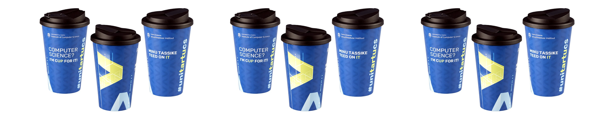
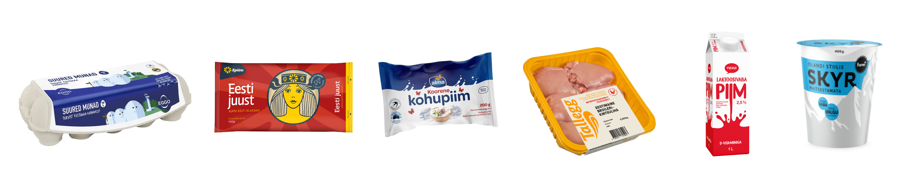
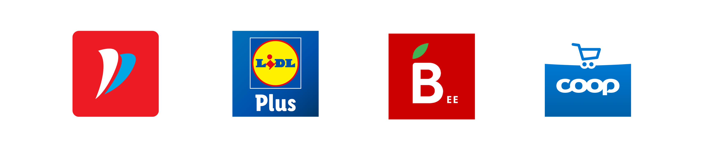

Säästunipid
Säästmine ei tähenda, et peaksid sööma halvasti. Kui planeerid oste teadlikult ja kasutad tooraineid targalt, saad süüa maitsvalt, mitmekülgselt ja odavalt. Oluline on natuke planeerimist ja harjumus vaadata toitu kui ressurssi, mitte lihtsalt söögikorda.
Kuidas tudengina toidult raha säästa?
-
Osta külmutatud köögivilju ja puuvilju
Külmutatud tooted säilitavad peaaegu kõik vitamiinid ja mineraalained, kuid on odavamad ja ei lähe nii kiiresti halvaks kui värsked. Nii väldid toidu raiskamist ja sul on alati midagi olemas, kui tahad kiiresti süüa teha.

-
Osta suuremas pakendis
Suuremad pakendid on tavaliselt soodsamad. Vaata hinnasildilt kilohinda või liitrihinda ja võrdle, kumb on kasulikum. Näiteks suur jogurtipakk või teraviljakott maksab peaaegu sama palju kui väike, aga kestab kaks korda kauem.

-
Asenda kallid koostisosad odavamatega
Kui tahad rooga odavamaks muuta, kasuta alternatiive. Näiteks kartuli asemel vali riis, makaronid või tatar, need on toitvad ja hoiavad kõhu kauem täis. Liha asemel võid lisada muna või tuunikala konserv, mis on maitsev ja soodne lahendus.

-
Valmista suurem kogus korraga
Tee süüa mitmeks päevaks ja pane ülejäänu külmkappi. Nii säästad nii raha kui ka aega, ja sageli on toit järgmisel päeval isegi maitsvam. Võta portsjon järgmisel päeval ülikooli kaasa ja väldi kallist lõunat.

-
Võta kohv või tee kodust kaasa
Üks kohvitops maksab 2-4 eurot. Kui võtad kohvi või tee kaasa oma termosesse, säästad iga nädal mitu eurot ja kuu lõpuks võib see olla juba märkimisväärne summa.
 -
Kasuta allesjäänud toitu loovalt
Kui sul on kodus toiduaineid, mis hakkavad aeguma, valmista neist midagi uut, näiteks omlett, pajaroog või supp. See aitab vältida raiskamist ja hoida rahakotti.
-
Vali valgurikkad toidud
Kui tahad, et kõht püsiks kauem täis, eelista valgurikkaid toite. Valk aitab hoida täiskõhutunnet ja annab energiat pikemaks ajaks. Hea valik on näiteks muna, tuunikala, Skyr, kodujuust või Kreeka jogurt.

Kasulikud rakendused, mis aitavad raha säästa
-
Tarbi targalt
Tarbi targalt on rakendus, mis aitab teha teadlikumaid ostuotsuseid. Sellega saab skaneerida toodete triipkoode, vaadata tooteinfot ja võrrelda hindu.
-
ResQ Club
ResQ Club ühendab restoranid ja poed inimestega, kes soovivad osta head toitu soodsamalt. Päeva lõpus pakuvad ettevõtted alles jäänud toite kuni 70% soodsamalt.
-
Hinnavaatlus
Hinnavaatlus on populaarne Eesti veebiplatvorm ja rakendus, kus saab võrrelda hindasid eri poodides. Sobib nii elektroonika, kodukaupade kui ka toidukaupade kontrollimiseks.
-
Bilance
Bilance aitab jälgida sissetulekuid ja väljaminekuid, koostada eelarvet ning näha, kuhu raha tegelikult kulub.
-
Toidupoodide rakendused
Peaaegu kõigil suurematel toidupoodidel on oma rakendus, mis aitab ostlemisel raha säästa. Rimi, Lidl, Maxima ja Coop äpid võimaldavad kasutada digitaalseid kliendikaarte, aktiveerida kupongid ja vaadata jooksvaid sooduspakkumisi.
